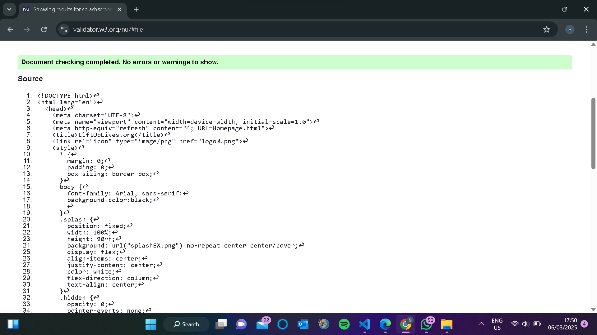
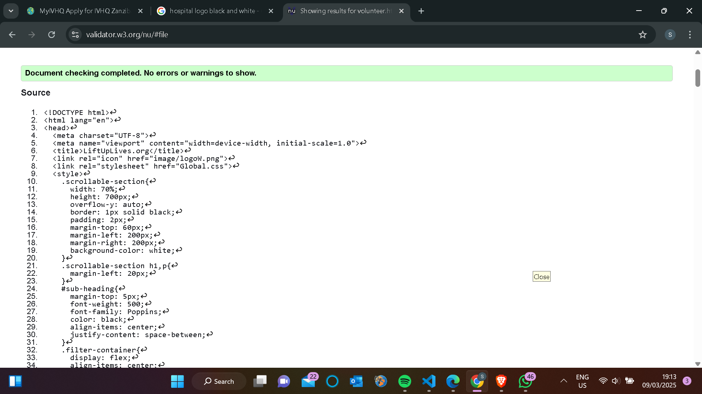
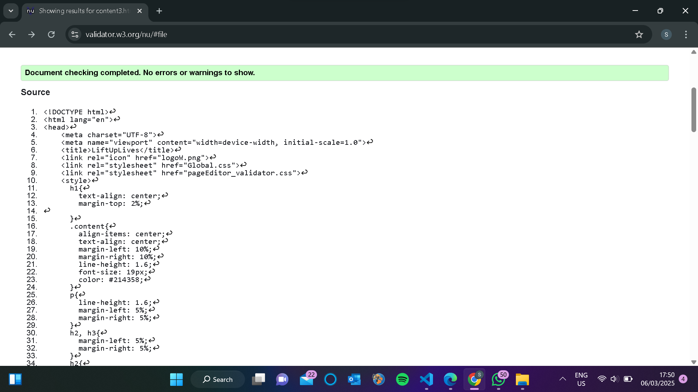

Splash Page validation report
There were few issues with the meta tag that were shown it was show that at end to the each meta tag i have used a "/". By validating my code I figure out that u don't need to put that sing to end of the meta tags. That was all, othere parts of the codes were good.
Back to Page Editor page
Volunteer Page validation report
By valitaing this code of the volunteer page initially I got 25 error messages 17 of them were because I used a "p" tag inside an "a" tag. I used them to link the volunteer page to actual volunteer pragrames but I saw in course work specifications they didn't mean somthing like that. So i removed the "a" tags. And the rest of the 8 were due to an error I did that was a basically a careless mistake I didn't closed a "tr" tag. That was all the error I got.
Back to Page Editor page
A link back to the page editor of the volunteer page
Content Page validation report
When I validating the content page there were no errors shown.
